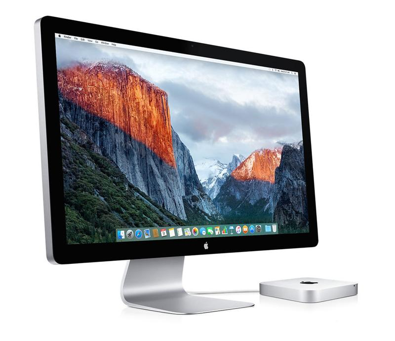

MONITOR
10116122 - MochamadIqbalDwiCahyo - IF3
 Monitor lebih mirip dengan sebuah televisi
Monitor digunakan untuk menampilkan hasil yang diproses oleh komputer
Monitor banyak sekali macamnya yaitu:
Monitor berukuran 14 inci
Monitor berukuran 15 inci
Monitor berukuran 17 inci